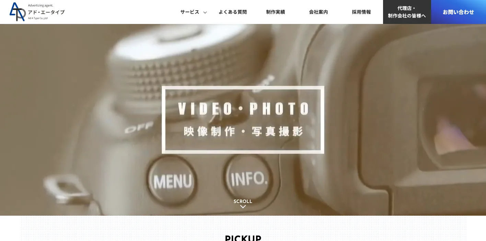
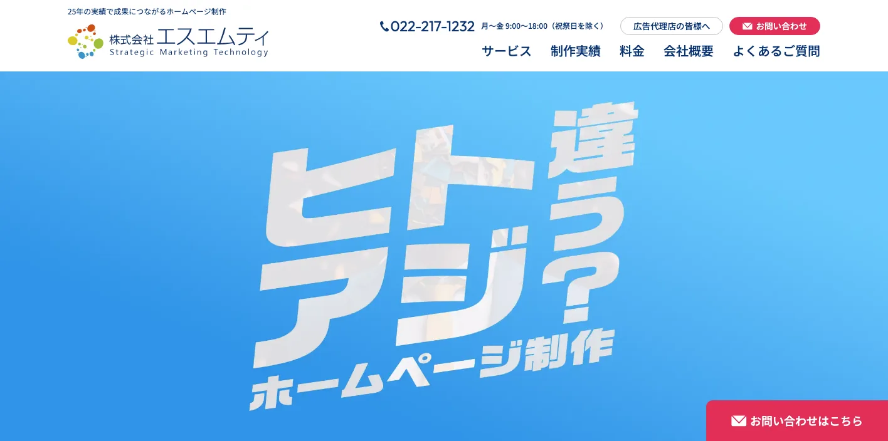
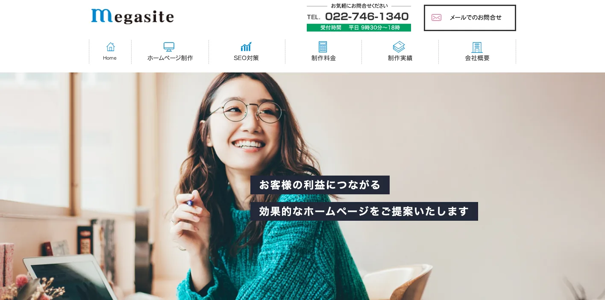
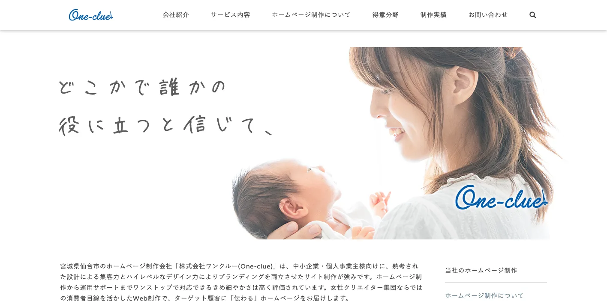
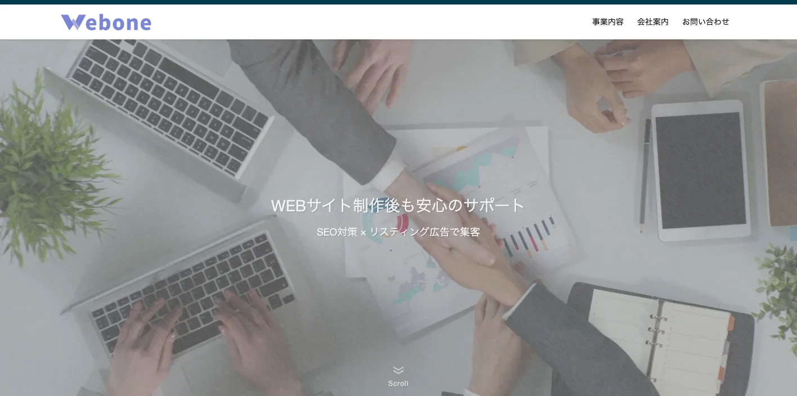
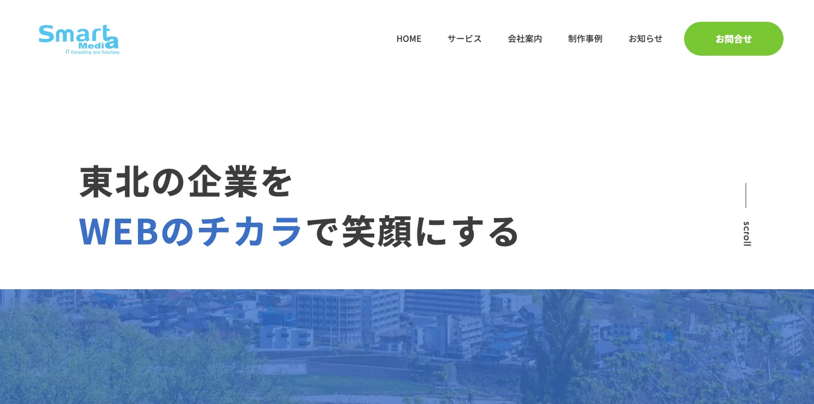
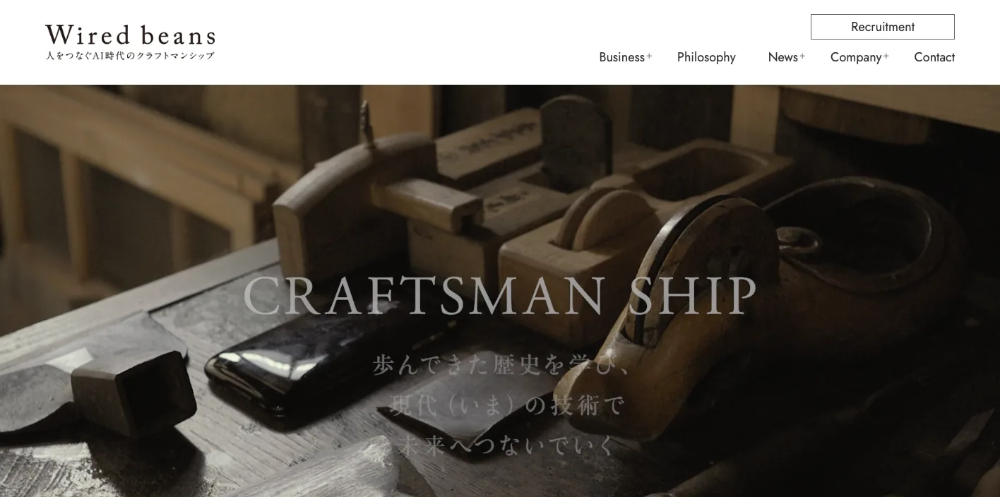
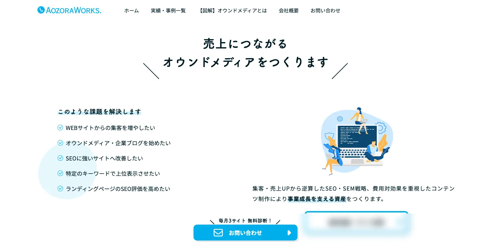
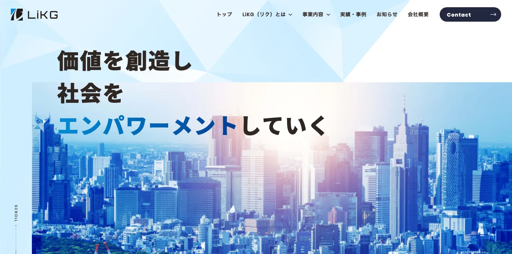

宮城県でおすすめのLLMO会社10選｜費用相場と選び方もわかりやすく解説

宮城県でLLMO会社を選ぶときは、単に「仙台のWeb制作会社」「SEOに強い会社」だけで探すと失敗しやすいです。仙台都市圏の店舗・医療・教育、県南の観光・温泉、県北の農業・ものづくり、石巻・気仙沼の水産・食品・港湾物流では、AI検索で比較される質問の形がまったく違うからです。
宮城県公式の推計人口月報では、令和8年3月1日現在の県人口は2,223,274人です。令和6年の観光統計では観光客入込数が7,051万人、宿泊観光客数が988万人泊でした。さらに、県は半導体関連産業の誘致・集積を進め、ものづくり特区では自動車、高度電子機械、食品、医療・健康など8業種を集積対象にしています。つまり宮城県では、地域集客だけでなく、東北広域の商談、観光回遊、食品EC、採用、専門BtoBまで見た情報設計が必要です。
この記事では、宮城県で比較対象にしやすいLLMO会社を10社整理し、そのあとに比較ポイント、費用相場、FAQ、まとめの順で解説します。基本から知りたい方はLLMO対策の基礎記事、東北の隣県も見たい方は青森県の比較記事や岩手県の比較記事も参考になります。現状を先に見たい場合は無料LLMO診断から始めると判断しやすいです。
目次

宮城県でおすすめのLLMO会社10選
今回は、宮城県内に拠点があり、Web制作、SEO、AEO、AIO、EC、コンテンツ運用などの公開情報を確認しやすい会社を中心に、LLMOを明示している全国対応会社も補完的に加えました。宮城県は仙台にWeb制作会社が集まりやすい一方、支援先は仙台市内だけではありません。石巻・気仙沼の水産、松島・蔵王・鳴子の観光、大衡・大和・大崎周辺の製造、名取・多賀城・仙台港周辺の物流など、相談内容がかなり分かれます。
そのため、会社選びでは「LLMOという言葉を使っているか」だけでなく、既存サイト改修、FAQ設計、構造化データ、SEO記事、EC、写真や動画、運用更新までどこまで実行できるかを見る必要があります。まずは表で向いている企業を確認し、その後に各社の特徴を見てください。
| 会社名 | 拠点性 | 向いている企業 | 支援の軸 |
|---|---|---|---|
| 株式会社アド・エータイプ | 仙台市 | AI検索対策を地元で相談したい企業 | AIO/LLMO・Web制作・SEO・システム・映像 |
| 株式会社エスエムティ | 仙台市 | 制作、運用、Webコンサルをまとめたい企業 | ホームページ制作・Webコンサル・SEO・運用 |
| 株式会社メガサイト | 仙台市太白区 | 中小企業の問い合わせ・採用・SEOを強化したい企業 | Web制作・SEO・広告・SNS運用 |
| 株式会社ワンクルー | 仙台市 | 美容、医療、飲食、宿泊、生活サービスを強化したい企業 | Web制作・AEOライティング・MEO・SNS運用 |
| 株式会社ウェブワン仙台 | 仙台市 | 低予算でも集客サイトを育てたい中小企業 | Web制作・SEO・広告・メディア運用 |
| 株式会社スマートメディア | 仙台市若林区 | 東北の中小企業、EC、広告運用を進めたい企業 | Web制作・EC・保守・Webマーケ・広告 |
| 株式会社ワイヤードビーンズ | 仙台市青葉区 | EC、CRM、DX、ブランド運営を本格化したい企業 | EC構築・CRM・DX・自社ブランド運営 |
| AozoraWorks. | 仙台拠点 | 記事、オウンドメディア、地域LPを強化したい企業 | コンテンツSEO・記事制作・編集・リライト |
| 株式会社LiKG | 全国対応 | LLMO診断から記事制作まで任せたい企業 | LLMO診断・LLMO×SEO伴走・記事制作 |
| 株式会社ジオコード | 全国対応 | SEOとAI最適化を実装込みで進めたい企業 | SEO・コンテンツ・AIO/LLMO・実装改善 |
株式会社AIMAは宮城本社の会社ではありませんが、全国対応でLLMO支援を提供しています。月額5万円のLLMO支援は初期費用なし・1ヶ月単位で始められ、質問設計、記事制作、引用チェックに絞って実務を進められます。仙台都市圏だけでなく、県南・県北・沿岸まで含めた情報整理も、まず無料LLMO診断で確認できます。
1. 株式会社アド・エータイプ

株式会社アド・エータイプは、仙台拠点の広告代理店・制作会社です。公式サイトでは、Web・ホームページ制作、マーケティング支援、広告運用、ITソリューションを通じて企業課題を解決すると案内しており、サービスとしてSEO対策だけでなくAI検索対策（AIO/LLMO）も明示しています。AIO/LLMOページでは、ChatGPT、Gemini、Google SGEなどの生成AI検索で信頼できる回答として推奨されるための最適化を説明し、構造化データ、エンティティ・ライティング、サイト改修、モニタリングまで触れています。
宮城県でLLMOを考えるなら、まず比較候補に入れやすい会社です。仙台市内の店舗や士業だけでなく、県内の製造、観光、食品、採用まで、Web制作とAI検索対策を同じ窓口で相談できます。「LLMOをやりたいが、既存サイトのどこを直すべきか分からない」企業に向いています。
参考：株式会社アド・エータイプ｜AI検索対策(AIO/LLMO)
2. 株式会社エスエムティ

株式会社エスエムティは、仙台のホームページ制作会社です。公式サイトでは、ホームページ制作、Webコンサルティング、システム開発、運用・プロモーションまで幅広く対応すると案内しています。ホームページ制作ページでは、反響や利益を生み出すサイト制作、マルチデバイス対応、LP制作、ECサイト制作、フォトグラファーやライターを含むワンストップ対応も紹介されています。
宮城県では、サイト制作と運用改善が分断されると、FAQ追加や記事改善が止まりやすいです。エスエムティは、Webコンサル、制作、CMS、運用更新までまとめて相談したい企業に向いています。仙台市内のBtoB企業、クリニック、士業、採用サイト、地域サービスのように、問い合わせや予約導線を整えたい場合に比較しやすい会社です。
3. 株式会社メガサイト

株式会社メガサイトは、仙台市太白区のホームページ制作会社です。公式サイトでは、デザイン、制作、検索順位上位表示対策、Web集客、問い合わせ増のサポートまで対応すると案内しています。SEOについても、ユーザーに分かりやすい文章と構成、良質なコンテンツを制作する手法で上位表示を目指す方針を示しています。
LLMOでは、AIに読まれやすい文章と構成が重要です。特に宮城県の中小企業では、サービス内容、対応地域、実績、料金、よくある質問が不足しているケースがあります。メガサイトは、仙台周辺の中小企業が、問い合わせ・採用・地域検索の土台を整えたいときに向いています。
4. 株式会社ワンクルー

株式会社ワンクルーは、仙台のホームページ制作会社です。公式サイトでは、中小企業・個人事業主向けに、設計による集客力とデザインを両立したサイト制作を案内しています。特徴ページでは、GoogleビジネスプロフィールのMEO、SNS投稿代行、LINE配信代行、OTAサイトの入力・ページ改善・更新まで、Web周りをまとめて運用代行できると説明しています。さらに、SEOに加えてAIによる検索結果抽出、つまりAEOまで見据えた文章校正・ライティングにも触れています。
宮城県では、飲食、美容、医療、宿泊、教育、生活サービスのように、ユーザーの不安を文章で解消する業種が多くあります。ワンクルーは、女性目線や生活者目線が重要なBtoC事業で、MEO・SNS・FAQ・予約導線まで整えたい会社に向いています。
5. 株式会社ウェブワン仙台

株式会社ウェブワン仙台は、宮城県仙台市の中小企業専門ホームページ制作会社です。公式サイトでは、制作後のサポート、SEO対策、リスティング広告による集客、メディア運営で習得したSEO対策を活かした費用対効果の高いホームページ制作を案内しています。事業内容ページでも、集客できるサイト設計を重視したコンテンツマーケティング、WordPress、公開後の運用やサイト改修支援を説明しています。
LLMOを始める前に、そもそもサイトが更新されていない、地域名ページが足りない、サービス説明が薄いという企業は多いです。ウェブワン仙台は、低予算でもWeb集客の土台を作り、少しずつページを育てたい中小企業に向いています。
6. 株式会社スマートメディア

株式会社スマートメディアは、仙台市若林区のホームページ制作・ECサイト制作会社です。公式サイトでは、Webサイト制作、ECサイト制作、保守運用、Webマーケティング、Web広告運用、システム開発・導入をサービスとして掲げています。ホームページ制作ページでは、課題解決や成果につながるサイト制作、戦略が落とし込まれた実用的なサイト制作を案内しています。
宮城県では、食品、農水産物、工芸品、観光体験、BtoB商材など、ECや問い合わせ導線と相性のよい事業が多くあります。スマートメディアは、Web制作だけでなく、EC、広告、保守運用まで一緒に見たい東北の中小企業に向いています。
7. 株式会社ワイヤードビーンズ

株式会社ワイヤードビーンズは、仙台市青葉区五橋に拠点を置く会社です。公式サイトでは、デジタルソリューションとしてEC構築・CRM構築をはじめとするDX支援を行い、Salesforce Commerce Cloud導入で国内トップクラスの実績があると案内しています。また、自社でも職人とつくるものづくりブランドを運営しており、2026年には「AI時代のクラフトマンシップ」を掲げたフィロソフィーも公開しています。
LLMOでは、商品、ブランド、FAQ、レビュー、配送、CRM、購入後体験まで情報がつながっているほど強くなります。ワイヤードビーンズは、宮城県や東北のEC、地域ブランド、食品・工芸品、D2Cを本格的に育てたい会社に向いています。小さなコーポレートサイト制作より、ECやCRMを含む大きめのプロジェクトで比較したい会社です。
8. AozoraWorks.

AozoraWorks.は、コンテンツSEOとオウンドメディア制作をサポートする仙台のサービスです。公式サイトでは、集客・売上アップから逆算したSEO・SEM戦略、費用対効果を重視したコンテンツ制作、キーワード戦略、構成作成、執筆、編集・校正、リライトをワンストップでディレクションできると説明しています。自社メディアや自社サービス運営の知見を活かす点も特徴です。
LLMOでは、単発記事を量産するより、ユーザーがAIに聞く質問を先に洗い出し、答えとなるページ群を作ることが大切です。AozoraWorks.は、仙台・宮城の地域LP、オウンドメディア、FAQ記事、事例記事を整えたい企業に向いています。
9. 株式会社LiKG

株式会社LiKGは、LLMOコンサルティングを明確に打ち出している全国対応会社です。公式ページでは、LLMO診断、LLMO×SEOコンサルティング、EEAT強化記事制作を案内し、AI OverviewやChatGPTにおける露出状況の調査、20項目診断、改善レポート、構造化データ改善指示、記事構成作成などを説明しています。料金も、LLMO診断10万円から、LLMO×SEOコンサルティング30万円からと公開されています。
宮城県の企業でも、すでにサイトや記事があり、AI検索にどう出ているかを診断したい場合に向いています。観光、食品、製造、医療、採用など、一次情報を持っているのにAI検索で拾われていない会社は、診断から始める価値があります。
10. 株式会社ジオコード

株式会社ジオコードは、SEO対策、コンテンツマーケティング、オウンドメディア運用、サイト修正・実装、AIO・LLMOなどAI最適化まで案内している全国対応会社です。サービスページでは通常プラン15万円からと公開されており、SEO対策コンサルティング、サイト修正、UI/UX改善、AI最適化、コンテンツマーケティングを組み合わせられる構成です。
宮城県内でも、仙台から東北全域や全国へ売るBtoB企業、EC企業、採用強化中の企業では、地場制作会社だけでなく全国のSEO会社も比較対象になります。ジオコードは、SEOとLLMOを分けず、分析から実装まで任せたい企業に向いています。
参考：株式会社ジオコード｜SEO対策・AIO・LLMOなどAI最適化も徹底支援
東北の他県と比較したい方は、岩手県のLLMO会社比較、青森県のLLMO会社比較も見ると、宮城県が「仙台中心の都市型市場」と「沿岸・県北・県南の広域市場」を両方持つ県だと分かりやすくなります。
宮城県のLLMO会社を比較する際のポイント
宮城県でLLMO会社を比較するときは、仙台市だけを見て判断しないことが重要です。仙台は東北最大級の都市機能を持ち、医療、教育、士業、店舗、BtoB、採用の検索が集中します。一方で、松島、蔵王、鳴子、石巻、気仙沼、大崎、登米、栗原などは、観光、食品、水産、農業、物流、製造の文脈が強くなります。
県公式の推計人口月報では、令和8年3月1日現在の県人口は2,223,274人です。令和6年観光統計では観光客入込数が7,051万人、宿泊観光客数が988万人泊で、観光客入込数は2年連続で過去最高でした。さらに県は、半導体関連産業について国内の重要拠点を目指すビジョンを示し、民間投資促進特区では自動車関連産業、高度電子機械産業、食品関連産業など8業種の集積を掲げています。LLMO会社には、こうした地域差と産業差をページ設計に落とし込む力が必要です。
仙台都市圏と県南・県北・沿岸で検索意図を分けられるか
宮城県では、仙台市の検索意図と、それ以外の地域の検索意図を分ける必要があります。仙台では「近くのクリニック」「法人向けサービス」「採用」「学校」「士業」「飲食」のような都市型検索が多くなります。名取、多賀城、富谷、利府は仙台通勤圏や商業圏として考え、白石・蔵王・大河原は県南観光や生活圏、大崎・栗原・登米は県北の農業・製造・広域サービス、石巻・気仙沼は水産・観光・港湾の文脈で考えます。
LLMO会社を比較するときは、単に「宮城対応」と書いてあるかではなく、どの地域の、どんな質問に答えるページを作るのかを言語化できるかを見ましょう。地域名を増やすだけでは弱く、対応範囲、交通、来店・出張可否、商談方法、配送条件まで整理できる会社が向いています。
観光・宿泊は仙台、松島、蔵王、鳴子、石巻・気仙沼を分けられるか
令和6年の宮城県の観光客入込数は7,051万人で、仙台圏域だけで4,073万人でした。松島海岸、仙台城跡・瑞鳳殿、あ・ら・伊達な道の駅、道の駅東松島なども入込増に寄与しています。観光・宿泊・飲食では、観光地点名だけでなく、アクセス、季節、所要時間、駐車場、周遊、子連れ可否、外国人対応、予約方法まで整理する必要があります。
AI検索では「仙台から日帰りで行ける温泉」「松島で子連れに向く宿」「気仙沼で海鮮を食べるなら」のように、かなり具体的な聞かれ方をします。観光地ごとのFAQと周遊導線を作れる会社を選ぶと、AIの回答に入りやすくなります。
半導体・自動車・高度電子機械の専門情報を扱えるか
宮城県は、半導体関連産業の誘致・集積を進めています。県の半導体産業振興ビジョンでは、国内における半導体生産の重要拠点を目指す考え方が示されています。また、ものづくり特区では、自動車関連産業、高度電子機械産業、食品関連産業、医療・健康関連産業などが集積対象です。
この領域のLLMOでは、「技術力があります」だけでは足りません。設備、加工範囲、認証、品質管理、量産可否、試作対応、納入実績、共同開発、技術資料、対応地域を整理し、AIが専門性と対応範囲を誤読しない構造にする必要があります。製造業の実績を扱えるか、技術者への取材ができるか、図表やFAQを作れるかを確認しましょう。
水産・食品・農業・ECの一次情報を構造化できるか
宮城県は水産と食品の説明力が重要な県です。農林水産省の都道府県別資料では、宮城県の海面漁業・養殖業産出額は888億円で全国4位とされています。宮城の食材や加工品は、店舗販売、ふるさと納税、法人仕入れ、EC、観光土産まで導線が分かれます。
LLMOでは、商品ページに「おいしい」「こだわり」だけを書いても弱いです。産地、魚種、加工方法、保存方法、規格、発送日、賞味期限、法人取引、アレルギー、調理方法、ギフト対応などを整理すると、AIが比較回答に使いやすくなります。食品・水産・農産物を扱う会社は、EC制作や商品情報整理まで支援できる会社を選びましょう。
仙台塩釜港・仙台空港・東北広域商圏まで説明できるか
宮城県の強みは、仙台市内だけで完結しないことです。仙台塩釜港は、仙台港区、塩釜港区、石巻港区、松島港区を持ち、仙台港区では国際物流ターミナルやコンテナ専用岸壁の延伸整備が進められてきました。仙台空港、東北自動車道、三陸沿岸道路、東北新幹線も含めると、宮城県の企業は東北全域や首都圏に商圏を持ちやすいです。
BtoB、食品加工、物流、観光では、配送範囲、納期、温度帯、港湾・空港との距離、営業エリア、拠点間連携を明示することがAI検索で効きます。「仙台にあります」だけでなく、東北広域の商流まで説明できる会社を比較しましょう。
採用・医療・教育・生活サービスの安心材料を整えられるか
仙台都市圏では、医療、教育、士業、美容、住宅、介護、採用など、生活者が比較するサービスが多くあります。この領域では、専門性だけでなく、対象者、料金、利用の流れ、担当者、アクセス、予約、キャンセル、口コミ、FAQが重要です。
AI検索は「初めてでも行きやすいか」「子ども連れでも大丈夫か」「転職先として安心か」のような質問に近づいています。LLMO会社には、生活者の不安を先回りして、サイト内で回答できるページを作る力が必要です。採用では、職種別の仕事内容、勤務地、研修、福利厚生、Uターン・Iターン情報まで整理できるかを見てください。
宮城県のLLMO会社に依頼する費用相場
宮城県でLLMOを外注する場合、費用は「何を任せるか」で大きく変わります。診断だけなら10万円前後から検討できますが、仙台市内の店舗サイトを少し直すのか、観光地別ページを作るのか、食品ECやBtoBの専門ページまで作るのかで必要な予算は違います。
大事なのは、単に安い会社を探すことではありません。仙台単点の集客なのか、県南・県北・沿岸まで含む広域設計なのか、ECや採用や製造業の専門情報まで含むのかを先に分けて見積もることです。
| 支援タイプ | 目安 | 主な内容 |
|---|---|---|
| 診断・スポット相談 | 10万円前後〜 | AI検索での出方確認、競合比較、改善優先度の整理 |
| ライトな継続支援 | 月額5万円〜15万円 | FAQ追加、少数ページ改善、記事作成、地域名ページの整備 |
| 伴走型の標準帯 | 月額15万円〜30万円前後 | 戦略設計、記事構成、内部リンク、構造化データ、定例改善 |
| 制作・EC・採用込み | 総額50万円台〜150万円超 | サイトリニューアル、EC、採用サイト、写真、商品情報、CMS |
まずは診断だけなら10万円前後から始めやすい
公開価格で分かりやすい入口は診断プランです。LiKGはLLMO診断プランを10万円から公開しています。まずAI検索で自社がどう扱われているか、競合と比べて何が足りないかを知りたい企業には使いやすい価格帯です。
宮城県では、仙台の競合が多い業種と、県北・沿岸の情報不足が大きい業種で、改善優先度が変わります。いきなり記事を量産するより、どの質問で出たいのか、どのページを直すべきかを先に決めるほうが無駄が少ないです。
参考：株式会社LiKG｜LLMOコンサルティング 料金プラン
小さく始めるなら月額5万円〜15万円帯が入口になる
店舗、クリニック、士業、工務店、美容、飲食、教室のように、まず少数ページを整えたい場合は月額5万円〜15万円帯が入口になります。AIMAでも月額5万円のLLMO支援を公開しており、質問設計や記事制作から小さく始めることができます。
この帯は、仙台市内の単一店舗や単一サービスなら現実的です。ただし、松島・蔵王・鳴子・石巻・気仙沼など複数エリアを扱う観光業、商品点数が多い食品EC、採用ページまで作る案件では、追加費用を見ておく必要があります。
伴走支援の中心帯は月額15万円〜30万円前後
毎月改善を進めるなら、月額15万円〜30万円前後が一つの中心帯です。ジオコードは通常プラン15万円から、LiKGはLLMO×SEOコンサルティングを30万円から公開しています。この帯になると、戦略設計、競合調査、記事構成、ページ改善指示、構造化データ、レポート、定例打ち合わせまで含まれやすくなります。
宮城県では、都市型サービス、観光、製造、食品、水産、ECで必要なページが違います。一度作って終わりではなく、AI検索の出方を見ながら直す支援が必要な会社は、この価格帯で比較すると現実的です。
参考：株式会社ジオコード｜SEO対策・AIO・LLMOなどAI最適化も徹底支援
参考：株式会社LiKG｜LLMOコンサルティング 料金プラン
制作・EC・採用まで含めると総額50万円台〜150万円超まで広がる
既存サイトが古い、スマホで見づらい、CMSがない、採用ページが弱い、EC導線がない場合は、LLMOだけでなく制作費が必要です。宮城県では、食品・水産・工芸・観光体験・BtoB商材など、商品説明や事例、写真が成果に直結する案件が多くあります。
ECや採用まで含めると、商品登録、撮影、取材、原稿、送料設定、レビュー、FAQ、特商法表示、CMS設計などが必要です。AI検索以前に、ユーザーとAIが読める情報をサイト内に用意する費用が発生すると考えてください。
宮城県では取材・撮影・商品情報整理で費用が上がりやすい
宮城県の案件では、現地取材や写真撮影が効きやすいです。観光では部屋、料理、アクセス、季節、水産・食品では加工場や商品、製造業では設備や工程、採用では職場や社員の雰囲気が判断材料になります。
AI検索でも、会社名、住所、サービス名、商品名、価格、実績、FAQが整理されているほうが理解されやすくなります。取材・撮影・原稿作成・更新作業が見積もりに含まれているかを必ず確認しましょう。
仙台単点か、宮城県内広域かで予算を分ける
費用で大きく変わるのは、仙台市内だけを狙うのか、県南・県北・沿岸まで広げるのかです。仙台市内の1店舗なら、主要ページとFAQだけでも始めやすいです。一方、松島、蔵王、鳴子、石巻、気仙沼、大崎、登米、栗原まで含めると、地域別ページ、観光導線、商品ページ、事例、配送条件、採用情報が増えます。
迷う場合は、最初に無料LLMO診断のような小さい入口で優先順位を決め、その後に単一商圏で進めるか、県内広域で設計するかを決めるのが安全です。
宮城県のLLMO会社に関するよくある質問
ここでは、宮城県の企業や店舗がLLMO会社を検討するときに出やすい疑問を整理します。比較ポイントや費用相場とは役割を分け、依頼前に確認すべきことだけを短くまとめます。
宮城県のLLMO会社に依頼する意味はありますか？
あります。宮城県は仙台都市圏、県南、県北、石巻・気仙沼などで商圏や検索意図が変わります。観光、医療、教育、製造、食品、水産、ECなどの情報をAIに正しく理解される形で整える価値があります。
宮城県内の会社でないと意味はありませんか？
必ずしも県内本社である必要はありません。重要なのは、仙台、松島、石巻、気仙沼、大崎、白石、名取などの違いや、観光・ものづくり・水産・食品の文脈を理解して設計できるかです。
仙台市以外の会社でもLLMOは必要ですか？
必要です。県南、県北、沿岸部では商圏が広く、地元名だけでは説明が足りません。隣接市町村、交通、配送、観光導線、出張対応まで整理したほうが、AI検索で比較されやすくなります。
宮城県の観光・宿泊・飲食でもLLMOは効果がありますか？
あります。仙台、松島、蔵王、鳴子、石巻、気仙沼などは目的や季節が違います。アクセス、所要時間、予約、周遊、子連れ可否、多言語FAQを整理すると、AIの比較回答に入りやすくなります。
宮城県の製造業や半導体関連企業でもLLMOは有効ですか？
有効です。設備、加工範囲、認証、量産可否、品質管理、納入実績、技術資料を整理すると、AIが専門性や対応範囲を理解しやすくなります。技術用語の整理も重要です。
宮城県の水産・食品・ECでもLLMOは使えますか？
使えます。産地、規格、保存方法、出荷時期、加工体制、配送条件、法人取引条件などを整理すると、購入前や仕入れ前の比較で選ばれやすくなります。
SEO会社とLLMO会社は何が違いますか？
SEOは検索結果で見つけてもらう施策、LLMOはChatGPTやAI OverviewなどのAI回答で引用・参照されやすくする施策です。宮城県では、地域名検索とAI検索を一体で考えられる会社が向いています。
宮城県のLLMO会社に依頼したら、どれくらいで成果が出ますか？
一般的には3〜6か月が目安です。既存サイトの状態、競合、記事やFAQの量、構造化データの整備状況によって変わります。短期で断定せず、観測しながら直す進め方が現実的です。
宮城県でLLMO会社を選ぶなら、仙台中心と東北広域の両方から逆算しましょう
宮城県のLLMO会社選びでは、仙台都市圏の集客力と、県南・県北・沿岸の産業文脈を分けて考えることが重要です。仙台の店舗や医療なら生活者の不安を解消するFAQ、観光なら周遊と季節性、水産・食品なら商品情報と配送条件、製造業なら設備・認証・実績、ECなら商品ページとCRMまで整理する必要があります。
まずは、自社が「仙台市内の見込み客」を狙うのか、「宮城県内の複数地域」を狙うのか、「東北・全国の商談」を狙うのかを決めてください。そのうえで、戦略だけでなく、ページ改修、記事制作、構造化データ、写真、FAQ、更新運用まで実行できる会社を選ぶと前に進めやすいです。迷う場合は、LLMO対策の基礎を確認し、必要なら無料LLMO診断やお問い合わせから、自社がどの質問で選ばれるべきかを整理していきましょう。